Challenge 1
Nhìn hình. Chọn đáp án phù hợp.
Người lớn: nguồn/ghi chú
🖼️bé nháy một mắt ở cặp 1a. Chọn từ/cụm từ đúng.
Đáp án giáo viên xem trong bài nguồn, không hiển thị trước cho bé.
Ảnh WebP nhẹ, không có nhãn đáp án trong bitmap. Câu hỏi và lựa chọn nằm riêng. Audio Challenge do chủ dự án bổ sung; hiện có thể nhờ người lớn đọc từ bài nguồn.
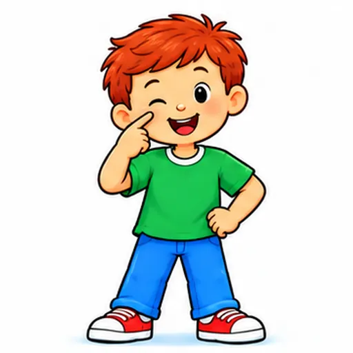
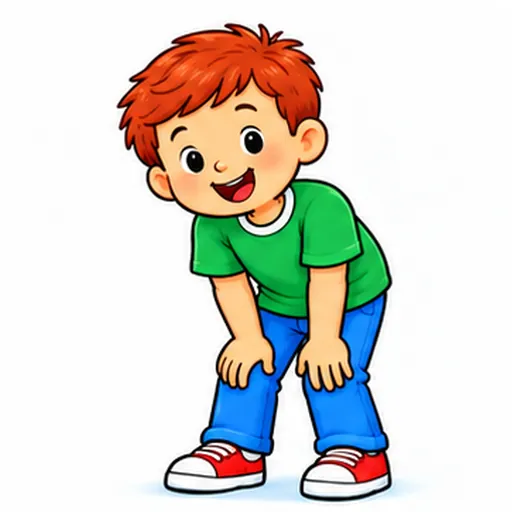
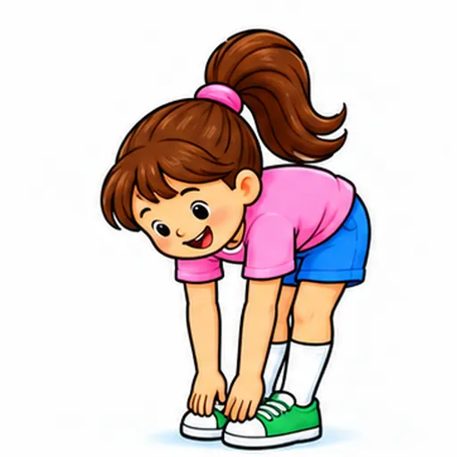
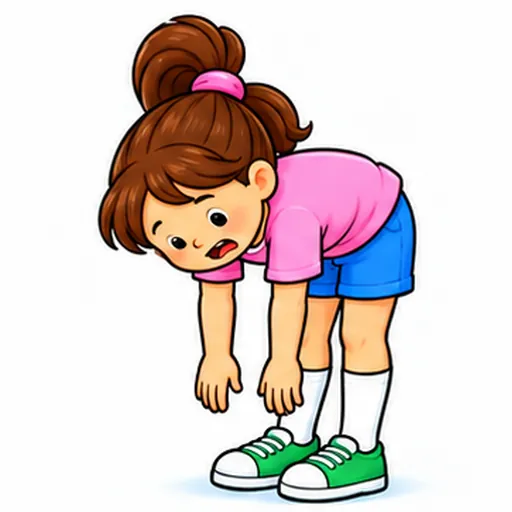
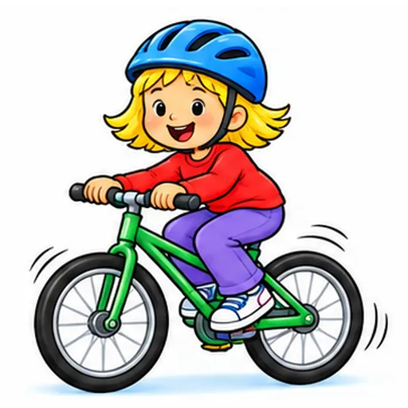
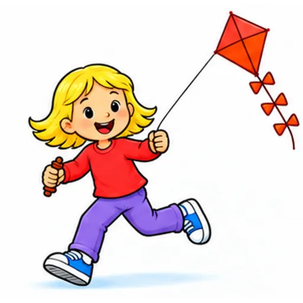
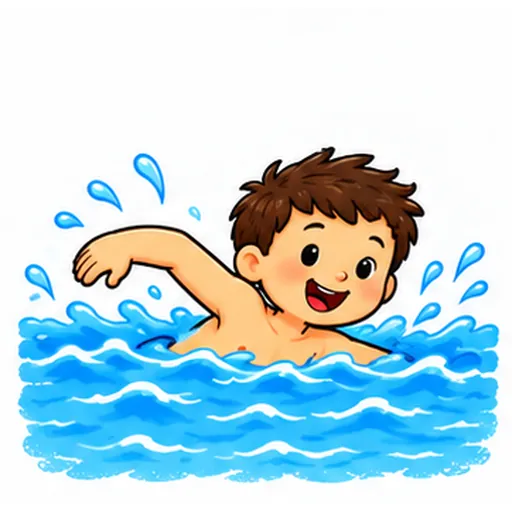
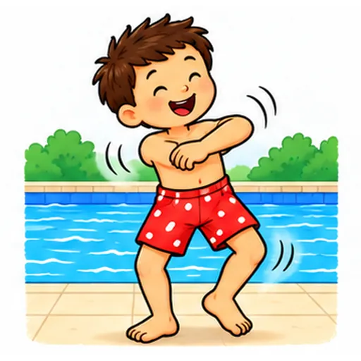
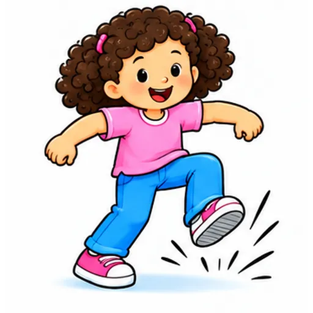
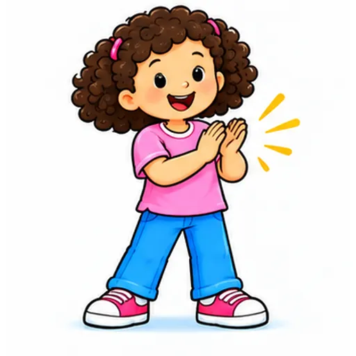
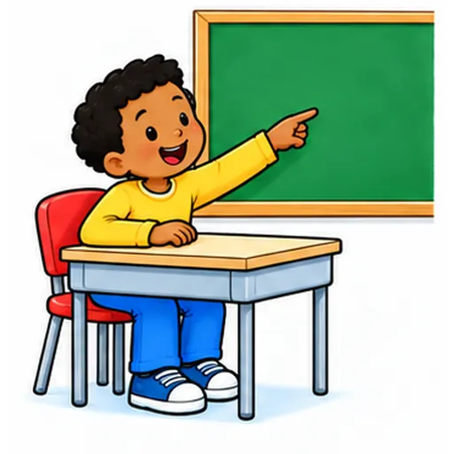
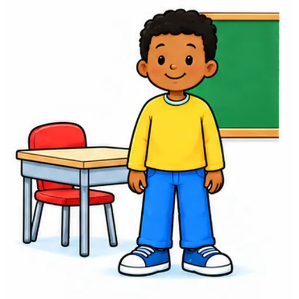
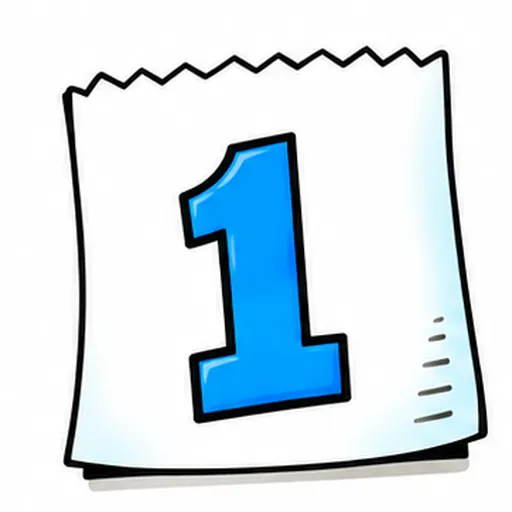
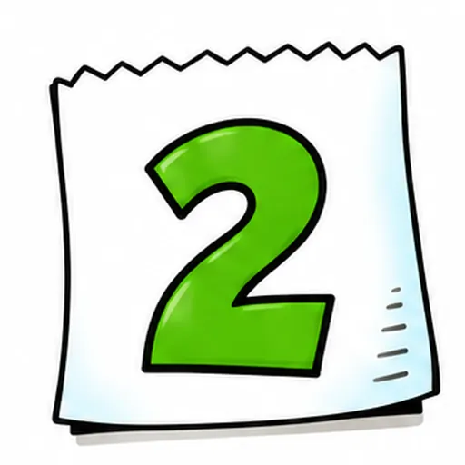
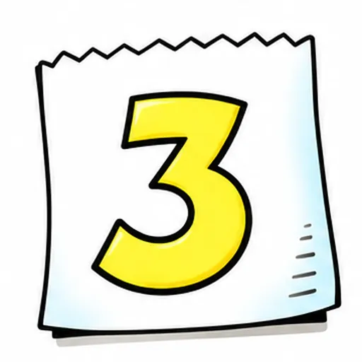
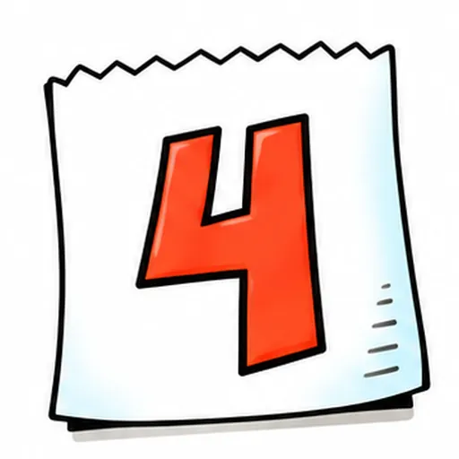
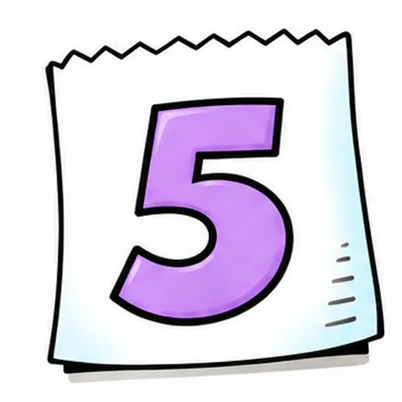
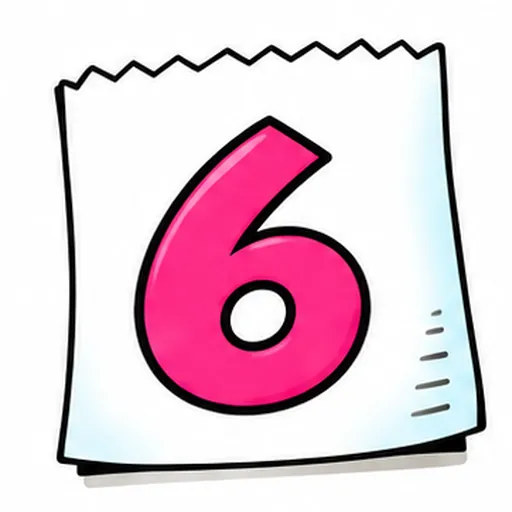
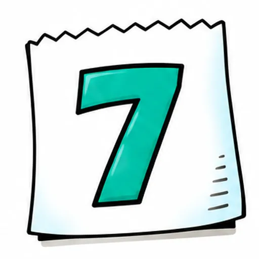
Nhìn hình. Chọn đáp án phù hợp.
🖼️bé nháy một mắt ở cặp 1a. Chọn từ/cụm từ đúng.
Đáp án giáo viên xem trong bài nguồn, không hiển thị trước cho bé.
Nghe audio hoặc người lớn đọc, rồi chọn câu trả lời.
Nghe tên ngày: chọn số THẺ trong mục Say these., không chọn ngày tháng.
Nghe câu mẫu và chọn ý nghĩa.
Đáp án giáo viên xem trong bài nguồn, không hiển thị trước cho bé.
Nhìn hình. Điền: `ride a ________`.
🖼️đi xe đạp. Điền: `ride a ________`.
Đáp án giáo viên xem trong bài nguồn, không hiển thị trước cho bé.
Nhìn hình. Nói hoặc điền câu trả lời của em.
🖼️bé nháy một mắt ở cặp 1a. Điền chữ cái của thẻ phù hợp.
Đáp án giáo viên xem trong bài nguồn, không hiển thị trước cho bé.
Nhìn hình. Chọn đáp án phù hợp.
Nhìn thẻ ngày 2 và hình 3a. Chọn cặp đúng.
Đáp án giáo viên xem trong bài nguồn, không hiển thị trước cho bé.
Nhìn hình. Nói hoặc điền câu trả lời của em.
Người lớn chỉ/diễn: bé nháy một mắt ở cặp 1a. Bé tự nói từ/cụm phù hợp.
Đáp án giáo viên xem trong bài nguồn, không hiển thị trước cho bé.
Các câu chưa có cue cố định được ghi trong mapping. Câu trả lời cá nhân không bị ép Yes/No. Toàn bộ bài luyện gốc được giữ nguyên.